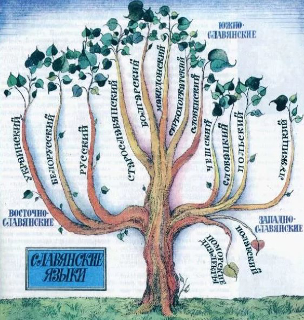

Язык и культура славян
Славянский язык
Славянский язык является основой для множества современных славянских языков. В процессе этногенеза произошло разделение на три группы: западнославянские, восточнославянские и южнославянские. Развитие письменности, а также распространение христианства сыграло важную роль в становлении культурных традиций славян.
Религиозные обряды, народные праздники и обычаи, такие как Рождество, Масленица и Пасха, сохранились до сих пор и остаются живой нитью, связывающей современные народы с их праславянскими корнями.

Письменность
Первая литературная обработка славянских языков была проведена в 860-х годах. Создателями славянской письменности были братья Кирилл (Константин-Философ) и Мефодий, которые перевели для нужд Великой Моравии с греческого языка на старославянский литургические тексты.
В своей основе новый литературный язык имел южно-македонский (солунский) диалект, но в Великой Моравии он усвоил много местных языковых особенностей. Позже он получил дальнейшее развитие в Болгарии. На этом языке (обычно называемом «старославянским») была создана богатейшая оригинальная и переводная литература в Моравии, Паннонии, Болгарии, на Руси, в Сербии.
Существовало два славянских алфавита: глаголица и кириллица. От IX века славянских текстов не сохранилось. Самые древние относятся к X веку: «Добруджанская надпись» 943 года, надпись царя Самуила 993 года, «Варошская надпись» 996 года и другие. Начиная с XI века сохранилось больше славянских памятников.

Фонетика
В области фонетики между славянскими языками имеются некоторые существенные различия. В большинстве современных славянских языков утрачено противопоставление гласных по долготе / краткости.
В то же время в чешском и словацком языках (исключая североморавский и восточнословацкий диалекты), в литературных нормах штокавской группы (сербской, хорватской, боснийской и черногорской), а также отчасти в словенском языке эти различия до сих пор сохраняются.
Общие особенности
Несмотря на региональные различия, все славянские языки сохраняют ряд общих черт, унаследованных от праславянского: богатую систему падежей, развитую глагольную аспектологию и характерные для индоевропейских языков чередования корневых гласных.